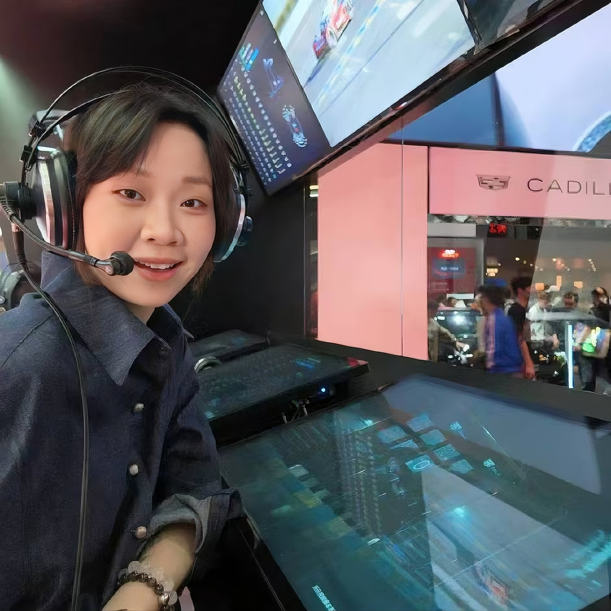

About Me!

- 📍 广东江门人，自大学起北漂有11个年头了，最喜欢的是北京的秋天
- 🎓 本科就读于北京语言大学汉语言文学，硕士就读于墨尔本大学文化艺术管理
- 💼 联想就职4年，C端数码消费，产品营销方向管培生
- 🐱 家有五猫，喜欢F1 & 游泳 & 网球
- 🌠 我坚信，好的营销不是消耗产品，而是放大产品，期待与一个尊重“好产品”的团队并肩，把更酷的产品，用更对的方式，交到懂它的人手里
“遵循商业规则，在理性的产品推导中，寻找感性的人文价值表达。”
个人优势及项目介绍
专注于智能硬件领域的新品发布整合营销，核心能力在于将硬核产品技术重构为高效的市场沟通
以下为曾操盘的核心项目，均以实现业务增长与用户共鸣为目标：
Project 01


moto razr 60 小折叠系列
主打时尚单品与小巧折叠的科技美学定位，深度渗透泛女性与潮流圈层
策略核心：以场景附加价值驱动消费
以“个性彰显”为核心，分层触达不同消费能力的女性客群。围绕“超合拍”心智构建三大支柱：
① 时尚单品：打造“OOTD超合拍”，绑定高频穿搭场景；
② 合拍神器：外屏主摄广角手势自拍，定义“合拍”新玩法；
③ 品质信任：强化“耐用超合拍”口碑，有效降低决策顾虑。
▷实现从颜值吸引、功能种草到信任转化的完整链路。
① 时尚单品：打造“OOTD超合拍”，绑定高频穿搭场景；
② 合拍神器：外屏主摄广角手势自拍，定义“合拍”新玩法；
③ 品质信任：强化“耐用超合拍”口碑，有效降低决策顾虑。
▷实现从颜值吸引、功能种草到信任转化的完整链路。
Project 02


moto X70 Air 轻薄新旗舰
对标苹果/荣耀Air机型，主打“极致轻薄不妥协”的直板旗舰，锚定新中产职场精英
策略核心：物理层讲轻薄，心理层讲“减负”，外显职场精英“高效率轻姿态”的价值主张
① 差异化定位：推导“轻巧出发”核心策略，将轻薄与高效率办公深度绑定；
② 认知破局：打造“轻薄不妥协”系列场景短片，通过硬核测评破解用户对轻薄机型续航/影像的担忧点；
③ 业务价值：用户搜索U1打超目标150%，成为近两年首发销量表现最佳的直板机型。
② 认知破局：打造“轻薄不妥协”系列场景短片，通过硬核测评破解用户对轻薄机型续航/影像的担忧点；
③ 业务价值：用户搜索U1打超目标150%，成为近两年首发销量表现最佳的直板机型。
Project 03


拯救者游戏手机 Y70 新一代
面向科技极客与电竞玩家，主打拯救者生态闭环及行业首发的端游串流方案
策略核心：做好生态内转化，复用拯救者PC存量粉丝资产
① 精准触达：包装同宗同源，发布会主讲人、博主、社交阵地、社群等资源高度协同，优先拉拢拯救者PC粉丝，将PC品牌忠诚度平移至手机；
② 圈层渗透：品牌全家桶赞助VCT_CN占位头部赛事，联动BLG战队做电竞叙事，以#瓦是大学生#为切口打入校园电竞场景；
③ 社群裂变：推出“先行者”体验计划，借力LGTI小程序，低成本激活高质量种子用户，迅速完成5000+核心私域蓄水，实现从流量触达到业务转化的快速闭环。
② 圈层渗透：品牌全家桶赞助VCT_CN占位头部赛事，联动BLG战队做电竞叙事，以#瓦是大学生#为切口打入校园电竞场景；
③ 社群裂变：推出“先行者”体验计划，借力LGTI小程序，低成本激活高质量种子用户，迅速完成5000+核心私域蓄水，实现从流量触达到业务转化的快速闭环。
方法论心得
01
✨ 技术语言 → 消费者可知可感的卖点转译
产品卖点包装能力：建立“USP+”方法论，打通从研发技术deck、PM-offering guide到市场语言的转化路径。
将联想moto razr系列的硬核参数（如屏幕尺寸、铰链寿命、SMT封装精密度）转化为消费者可感知的利益点“外屏也是主力机”、“7年折叠无忧”、“行业领先制程，整机性能稳定，杜绝故障频发”，实现产品语言与市场语言的无缝衔接。
02
🎯 新品策略推导：从行业大盘与竞品死角寻找破局点
差异化定位能力：“破局点三维定位法”（行业大盘扫描 + 竞品死角洞察 + 用户痛点交叉），完成从模糊机会到清晰策略的推导。
分析主流竞品（Redmi Note、vivo Y等系列），交叉验证目标客群（务工青年、长辈用户、备用机刚需者）的核心诉求排序为：续航＞屏幕护眼＞抗摔耐用。跳出千元机“性价比参数战”，锚定 “超续航、超好屏、超抗造” 三大用户核心换机驱动力，将g100 Pro定位为 “千元档闭眼入的安心之选”。
03
🔍 用户洞察：不止做包装，还得做定义，不止管发布，还得管体验
机制建设能力：从偶发反馈升级到系统机制，“定性深挖+定量扫广”双线并行
（深挖）面对面工作坊：带着洞察和用户原话，和研发一起battle优先级，Y70新一代迁移平板能力优先级原本并不高，后来基于用户反馈，才制定了旗帜鲜明的“我有我有，人有我追”原则，确保了legion zone功能在Y70上的完整平移；
（扫广）用户VOC监控：社交媒体舆情+电商评价+客服记录+社群反馈，周度扫描：X70 Air上市通过原声跟踪发现air机型续航隐忧，针对性打造“24h不间断续航挑战”实测；UI/UX体验闭环：高频痛点→周报同步产品团队→下个版本或OTA修复→用户回访验证。
（扫广）用户VOC监控：社交媒体舆情+电商评价+客服记录+社群反馈，周度扫描：X70 Air上市通过原声跟踪发现air机型续航隐忧，针对性打造“24h不间断续航挑战”实测；UI/UX体验闭环：高频痛点→周报同步产品团队→下个版本或OTA修复→用户回访验证。
04
🎬 核心物料生产：以in-house团队为圆心，建立“从策略到成片”的全链路物料中台
物料把控能力：审美是底线，策略翻译力是关键，落地是闭环
每个物料都要回答四个问题：审美对不对？创意准不准？沟通有没有效？是否能准时交付？
1、打造核心把控力，培养关键接口人；2、策略对齐会；3、用物料日历倒推资源、产能和风险；4、持续输入AIGC前沿技术，激活团队创新力；
越是靠近执行，越需要有实践过的真知灼见，例如：① 下需求前对清楚目的和应用场景；② 创意前定义好checklist，范围内不许动，范围外自由发挥；③ 物料提前预埋“缓冲期”；④ 拍摄“一鱼多吃”，单次拍摄规划多种物料；⑤ 每周设立“AIGC扫盲时间”，重点是“这周什么能用”，把AI嵌入工作流。
越是靠近执行，越需要有实践过的真知灼见，例如：① 下需求前对清楚目的和应用场景；② 创意前定义好checklist，范围内不许动，范围外自由发挥；③ 物料提前预埋“缓冲期”；④ 拍摄“一鱼多吃”，单次拍摄规划多种物料；⑤ 每周设立“AIGC扫盲时间”，重点是“这周什么能用”，把AI嵌入工作流。
05
🏠 品牌沟通场：建立有深度、可持续的品牌用户关系
阵地经营能力：从官方蓝V → 衍生账号，品牌曝光 → 兴趣电商，从官号策划 → 博主投放，以资源排布策略为核心，以平台差异化为抓手，把官方阵地从“发稿渠道”升级为“人群资产沉淀池”
子弹有限，怎么排布资源是重点，要看目标，看“产品-平台-人群”的契合度，同一款产品在不同阶段，资源重心也不一样。官方账号不是“发稿渠道”，是“人群资产沉淀池”， 每个平台的“官方号人设”不一样，不能搞一刀切。主号做品牌调性，衍生号做“更野”的内容，比如主号发产品，衍生号发拍摄花絮、员工日常、AIGC实验，衍生号涨粉更快，还能反哺主号。
Let's Connect.
目前正在积极寻找全新的产品营销 / 整合营销（IMC）相关工作机会。
如果您对我操盘的项目经验或方法论感兴趣，欢迎通过右侧建立联系。
Email
morning_kayden@163.com
WeChat / Available Time
mochi11mochi / 10:00-19:00，优先微信联系
Resume
Download Full CV ↓